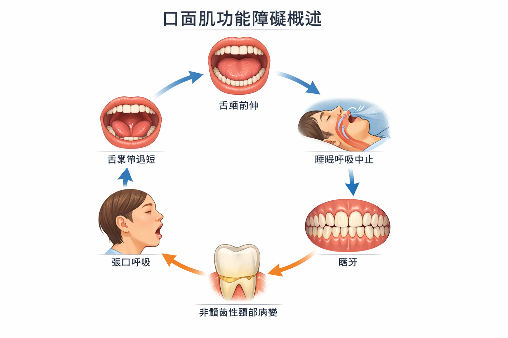
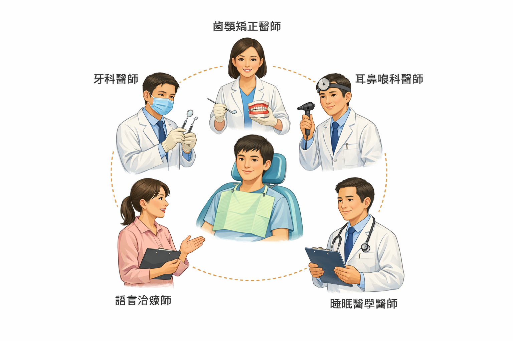

🔗 常見連動
這些問題，為什麼常常一起出現？
口顎功能問題並不一定彼此獨立。研究觀察到，以下幾個環節之間存在常見的連動關係——不是每個人都會走過全部步驟，但了解這些連動，有助於理解自己的症狀從何而來。
1
舌頭姿勢與吞嚥方式
嬰幼兒時期的前推式吞嚥，若未在發育過程中自然調整，舌頭姿勢可能長期偏低或偏前。
↓ 可能連動
2
口呼吸與鼻呼吸功能
舌頭支撐不足時，嘴巴容易維持開放狀態，鼻呼吸比例可能下降——而鼻塞等上呼吸道問題也可能是原因之一。
↓ 可能影響
3
上顎發育與氣道空間
長期口呼吸在發育期間可能影響顎骨寬度，部分研究觀察到氣道空間的改變，但個體差異相當大。
↓ 可能相關
4
睡眠品質與磨牙
氣道空間較小時，睡眠期間呼吸可能更費力。部分研究發現磨牙與睡眠呼吸中止之間的關聯，但兩者的確切機制仍在持續研究中。
↓ 累積結果
5
牙齒與咬合承受長期壓力
吞嚥代償力量與夜間磨牙，都可能對牙齒造成累積性的磨耗與位移——尤其在功能問題長期未被識別的情況下。
📌 重要提醒
以上是一個常見的連動模式，不代表每個人都會依此路徑發展，也不表示所有症狀都來自同一個原因。每個人的狀況不同，完整評估才能釐清實際的影響因素。
✅ 好消息
這個連動是可以被介入的。針對口顎功能的訓練與治療，已有多項研究觀察到對睡眠品質、磨牙和氣道的正向改變。早期識別症狀，往往能讓處理更有效率。
📋 先做個小測驗
你有這些狀況嗎？
勾選符合自身狀況的項目。這不是醫療診斷，而是幫助你判斷是否有進一步了解或評估的必要。
🔍 快速自我檢查
📊 研究怎麼說
這些問題，比你想像的更普遍
以下數字來自學術研究，幫助你了解這些問題在人群中的規模——但每個數字背後都有研究限制，請一併參考說明。
「牙齒出問題，不一定只是因為不刷牙。
吞嚥方式、呼吸習慣和睡眠品質，也可能是值得一起放入評估的因素。」
吞嚥方式、呼吸習慣和睡眠品質，也可能是值得一起放入評估的因素。」
── 口顎肌功能異常多系統影響研究摘要
🗺 探索主題
你最想先了解哪個？
每個主題都有專屬頁面，有簡單說明、自我評估與延伸閱讀，用高中生都能理解的方式呈現。
呼吸與睡眠
氣道、打鼾、磨牙、日間疲勞
😴
磨牙與睡眠呼吸
磨牙的原因可能不只是壓力——睡眠期間的呼吸狀態，也值得一起評估。
探索這個主題 →
😮💨
口呼吸
嘴巴呼吸有時有生理原因——了解背後可能的影響，以及什麼時候值得進一步評估。
探索這個主題 →
吞嚥與舌功能
舌位、吞嚥代償、繫帶、說話
👅
逆吞嚥（舌推力）
你每天吞嚥約 2,000 次——了解吞嚥方式如何影響牙齒與口腔結構。
探索這個主題 →
👶
舌繫帶沾黏
舌繫帶的影響範圍可能超過哺乳和說話——了解它與發育和睡眠的可能關聯。
探索這個主題 →
咬合、肌肉與磨耗
牙齒磨耗、臉型、矯正後穩定
💡 常見誤解
這些說法，值得重新認識
這些問題的成因通常是多元的，不一定可以用單一解釋涵蓋所有人。以下是幾個常見的過度簡化，值得一起了解。
磨牙只是因為壓力？
壓力確實是影響因素之一，但部分研究顯示睡眠呼吸狀態也可能相關。若磨牙持續且嚴重，值得同時評估睡眠品質，不只是壓力管理。
嘴巴呼吸只是壞習慣？
口呼吸有時有生理背景，例如鼻塞、扁桃腺肥大或舌頭姿勢等。光靠提醒或意志力不一定有效，找出背後原因才更有幫助。
牙頸部磨損是刷牙太大力？
刷牙方式確實是可能原因之一，但研究也顯示咬合力與吞嚥代償可能是重要因素。更換牙刷不一定能解決背後的功能問題。
矯正後跑掉是沒戴保持器？
保持器確實重要，但如果吞嚥方式或口唇肌肉功能未同步調整，持續的推力可能影響穩定性。矯正前後的功能評估，有助於維持長期結果。
🏥 什麼時候該求助
這些情況，值得認真評估
以下是一些可能值得主動諮詢的情境。這不是診斷清單，而是幫助你判斷是否需要進一步了解。
🦷 牙科 / 矯正科
- 牙齒矯正後反覆回位
- 牙頸部有楔形缺損
- 咬合感覺不對稱
- 下巴關節有聲音或疼痛
😴 睡眠 / 耳鼻喉科
- 早上起床仍然疲憊
- 打鼾或睡眠時呼吸暫停
- 磨牙已造成明顯磨損
- 日間過度嗜睡、注意力差
👅 語言治療師
- 孩子吞嚥時嘴唇或下巴明顯用力
- 說話有發音問題
- 舌頭無法輕鬆碰到上顎
- 餵奶或進食困難
👶 兒科 / 發育評估
- 孩子長期嘴巴張開呼吸
- 臉型有明顯的垂直拉長感
- 學業注意力問題合併打鼾
- 舌繫帶疑似影響功能
📋 看診前可以準備的問題
帶著這些問題去，可以讓評估更有效率：
- 「我的症狀是否可能與口顎功能有關？」
- 「是否需要評估睡眠呼吸狀況？」
- 「口顎肌功能訓練（OMT）適合我嗎？」
- 「需要多科合作評估嗎？」
🔗 延伸工具
準備矯正，或矯正後有疑問？
口顎功能問題有時與矯正計畫密切相關。如果你有以下情境，以下資源可能對你有幫助。
🦷
準備做矯正？
如果你有打鼾、口呼吸、下巴不適或磨牙等狀況，矯正前完整評估口顎功能，有助於治療計畫更全面。
矯正安全與風險評估指引，由趙哲暘醫師整理。
前往矯正安全評估 →（網站建置中，即將上線）
🔬 資料來源與方法
這些資訊怎麼來的？
本站由趙哲暘醫師（台灣牙科睡眠醫學會理事長、陽明交通大學腦科學博士）主持，透過三個國際學術資料庫進行系統性查詢與整理。
📌 關於本站的資料呈現方式
本站引用的數字與研究結果，均來自已發表的學術文獻。但每一篇研究都有其研究對象、方法與限制——單一數字不代表適用所有人，也不應被當成自我診斷的依據。本站的目的是幫助你辨識值得關注的訊號，而非提供診斷或治療建議。
200+
查詢論文數
3
學術資料庫
6
主題深度研究
36
學術簡報
📚 SciSpace
2.8 億篇論文資料庫，每主題廣度搜尋 300–500 篇文獻，確保不遺漏重要研究。
🔢 Elicit
1.38 億篇論文，精確萃取 OR/RR/CI 等量化數值，讓每個統計數字都有文獻依據。
⚖️ Consensus
2 億篇論文，量化學術共識程度，反映整體研究走向而非單一論文結論。

👨⚕️ 內容來源
趙哲暘醫師
🏆 氧樂多牙醫診所院長 · 台灣牙科睡眠醫學會理事長
專長：以上呼吸道與顳顎關節健康為導向的不拔牙齒顎矯正、顳顎關節診療、睡眠呼吸中止症
學歷：國立陽明大學牙醫學系、國立陽明交通大學腦科學研究所博士

❓ 常見疑問
你可能想問的問題
這是什麼科在處理？我要看哪裡？+
口顎功能問題通常涉及多個科別：牙科與矯正科評估口腔結構、耳鼻喉科處理鼻塞與呼吸道、睡眠醫學科診斷睡眠呼吸問題、語言治療師負責吞嚥與舌頭功能訓練。從你最有把握的科別開始，說明你的症狀，再視情況轉介。
口呼吸一定會讓牙齒變亂嗎？+
不一定。口呼吸對牙齒與臉型發育的影響，受到年齡、程度、持續時間與個體差異等多重因素影響。部分研究確實觀察到相關性，但口呼吸不等於一定會造成特定結果。如果孩子長期以口呼吸為主，值得評估背後原因並討論是否需要介入。
磨牙是不是只是壓力太大？+
壓力是常見的影響因素，但不是唯一原因。近年研究顯示，睡眠呼吸中止症與磨牙的共病比例較高，推測與睡眠期間的呼吸道壓力有關。如果你的磨牙嚴重或合併早晨頭痛、疲憊，值得同時評估睡眠品質，不只是情緒壓力。
吞嚥方式不良一定要治療嗎？+
不一定。吞嚥方式是否需要介入，取決於它是否造成實際影響——例如牙齒位移、矯正後不穩定、或合併其他口顎功能問題。如果症狀不明顯，也可以先觀察。如果你的矯正後反覆跑掉，或舌頭功能有疑慮，可以請醫師評估是否需要口顎肌功能訓練（OMT）。
這些問題和矯正有什麼關係？+
口顎功能問題可能影響矯正的穩定性。如果吞嚥方式或口唇肌肉功能未在矯正前後被評估與處理，牙齒受到的持續推力可能讓矯正結果較難維持。這不是說矯正一定會失敗，而是提醒在評估矯正計畫時，功能層面也值得一併考量。
如果我準備矯正，哪些症狀要告訴醫師？+
建議主動告知：打鼾或睡眠時呼吸暫停、早晨下巴痠痛或頭痛、習慣口呼吸、吞嚥時嘴唇或下巴用力、舌繫帶疑似過短、過去矯正後快速反彈。這些資訊有助於醫師更全面地規劃治療，也可以討論是否需要在矯正前先處理功能問題。
已經矯正完，卻還是有症狀，該怎麼辦？+
矯正後仍有症狀（如磨牙、下巴不適、牙齒又開始移位），可能有多種原因，包括功能問題未被處理、保持器使用不足、或其他未被識別的因素。建議先回到原來的矯正醫師說明狀況；若需要，可以請求轉介或尋求第二意見。自我評估頁面可以幫助你整理症狀，方便就診時說明。
這個網站是在宣傳某種單一療法嗎？+
不是。本站的目的是提供病人教育資訊，讓一般民眾了解口顎功能問題的多元面向與彼此關聯。我們不推薦任何單一診所或療程，也不主張所有問題都有相同的解決方案。每個人的狀況不同，完整的臨床評估才能決定最適合的處理方向。
這些內容有學術根據嗎？+
是的。本站所有資訊來自已發表的同儕審查文獻，包括系統性回顧、Meta 分析與臨床研究。我們透過 SciSpace、Elicit 與 Consensus 三個學術資料庫進行查詢，共整理超過 200 篇論文。相關學術簡報可在「簡報資料」頁面查閱，完整研究文件（英中雙語）可在「研究文件」頁面下載。
孩子幾歲最適合開始處理？+
一般而言，發育期（4–12 歲）的骨骼可塑性較好，介入效果通常較佳，但成人也有適合的治療選項。年齡不是唯一考量因素——症狀嚴重程度、影響範圍與孩子的配合度都會影響介入時機。建議先由醫師評估，再決定是否需要介入以及從哪裡開始。
我已經戴咬合板了，還需要其他處理嗎？+
咬合板有助於保護牙齒不被磨損，是常見的症狀管理工具。但它主要處理結果，不一定能解決背後的原因。如果磨牙持續且合併其他症狀（如打鼾、早晨疲憊），值得同時評估睡眠呼吸狀況，討論是否需要更進一步的處理。
📚 延伸資源